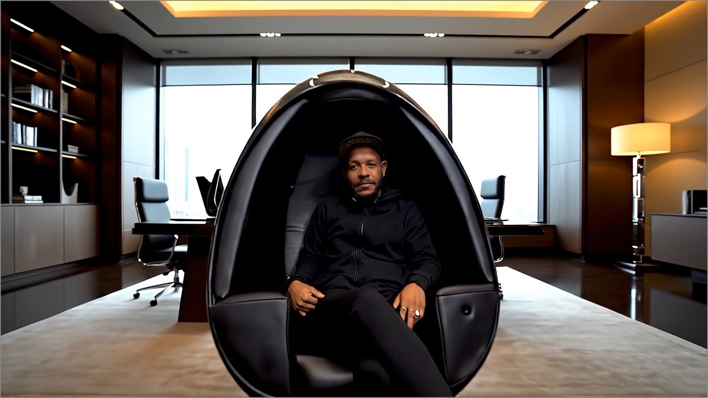

Personal audio architecture · California
The shapeof sound.
A handcrafted listening sanctuary that turns music, film and therapeutic frequencies into a physical experience.
A room within a room
The world disappears.
The sound remains.
SoloDome places a calibrated acoustic environment directly around the listener—reducing distance, room reflections and distraction. Four speakers, focused low-frequency energy and enveloping comfort create an experience no conventional chair can match.

Closer than photography
Turn the SoloDome yourself.
Inspect the shell, interior and sculptural profile through a drag-controlled product experience built for desktop and mobile.
Open the 360° viewer
Sound you can feel
A more physical
way to listen.
Low frequencies become gentle, embodied energy—bringing new depth to meditation, recovery, breathwork and the simple act of listening.
Enter the experience ↘The collection
Three expressions.
One acoustic philosophy.
Every SoloDome is built to order and personalized in California—from exterior finish and upholstery to professional audio options.


Engineered for presence
Acoustics become architecture.
A specially designed binaural 2.1 system and controlled near-field geometry place the listener at the center of a complete sound field.


One dome. Many worlds.
Designed around the way you live.
From critical listening to quiet focus, SoloDome turns a single seat into a deeply personal destination.


Made one at a time
California craft.
Personal expression.
Each SoloDome is handcrafted to order in Chatsworth. Exterior color, interior upholstery and optional custom artwork are selected around the client and the space it will inhabit.
Discover the craftsmanship ↘

SoloDome Auditory
Clarity, calibrated to the listener.
Proprietary software and a custom-tuned amplifier system create a personalized audio profile for users with hearing loss or damage—bringing music, movies and television into clearer focus.
- Profile
- Personalized hearing calibration
- System
- Chair, tablet, stand and ottoman
- Service
- White-glove setup and training
Made for your space
Your color.
Your texture.
Your SoloDome.
Begin with Classic or Deluxe, then select an exterior finish, interior tone and professional audio options.
Open the configurator